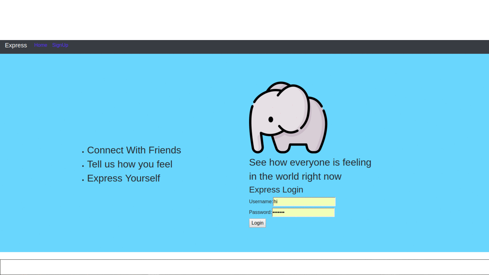
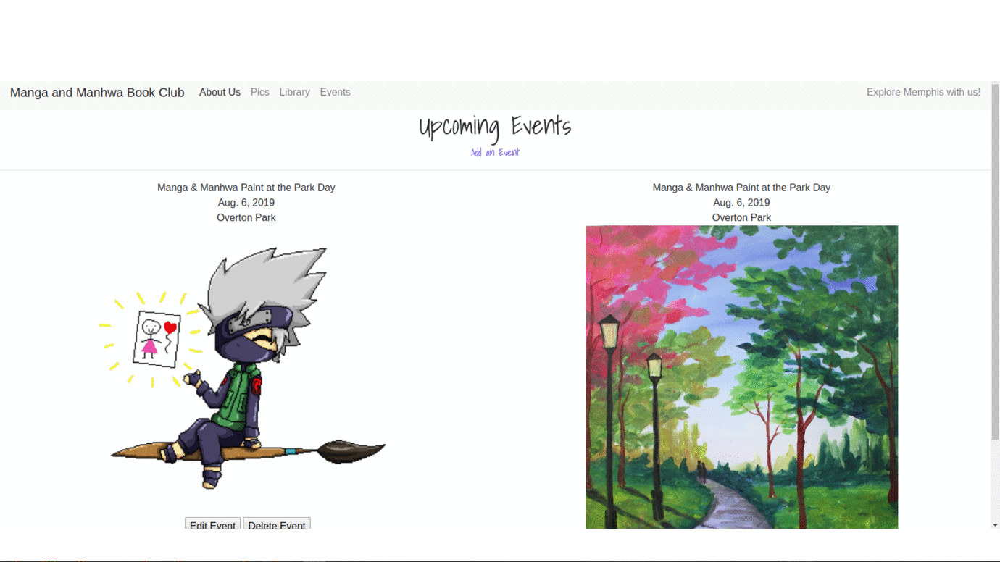
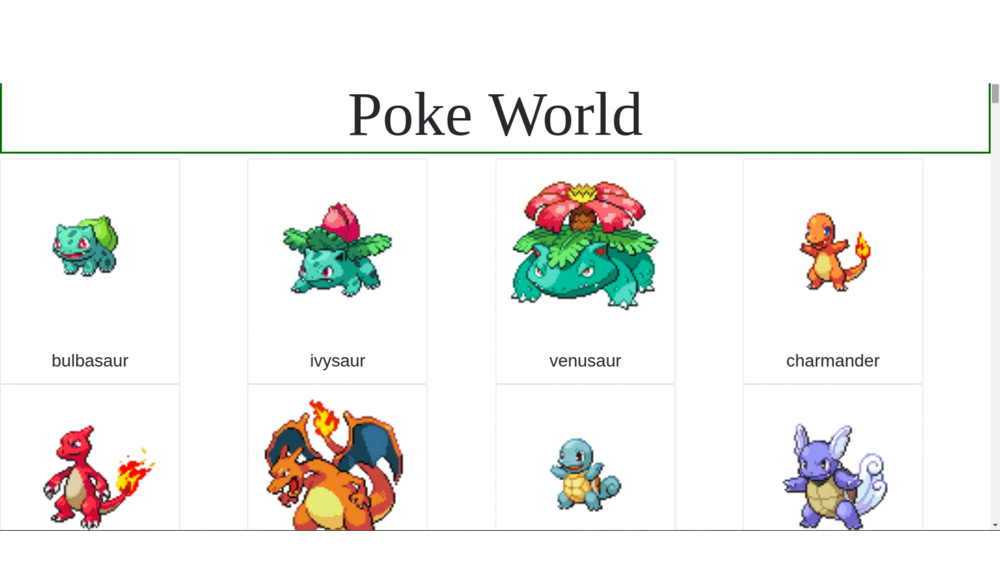

Wiki World App
The Mock Wikipedia Project was our first Week long project to recreate Wikipedia. To complete the project I used a django database with python and the django html templating which allowed me to have the same templating for each page. On the app it allows the user to log in or for new users to create profile. When a user visits the site they are able to see all posts and search posts and if he user creates an account they are able to create, edit or delete their post and use the search.

Express Yourself
The Mock twitter project is our version of tweitter using the MERN stack. Users can create an account and loging. Once they are signed in they can add tweets privately on their webpage, or publicly so all the users can see. When they create n account, it creates a profile page with background image as well as a profile image. When a tweet is added , it shows up on the home page.

Manga and Manhwa Book Club Website
In September of 2018, i created a book club uniquly for reading Manga and Manhwas. We meet up at cafes and shops all over Memphis to see what hidden jems the city has to offer. At M&M we do not only read and have meetups, but we celebrate asian holidays and traditions. I have always wanted to lead and organize a group and build a community. With Manga and Manhwa i can express my love for culture, Graphic design and event planning. I not only plan all the events, but i also created a flyer for every event. It has grown my love for community anf technology. For my Passion project I build a website for my bookclub where you can become a member, see all the amazing books we read and have a link for it online as well as the events we have twice a month. Discussion board and profiles are on the way as well as a payment method for selling tshirts and Kawaii Kits. FuLLStack DJANGO was used for this project.
